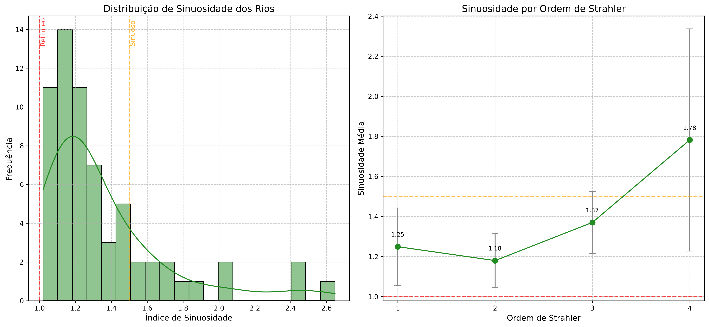
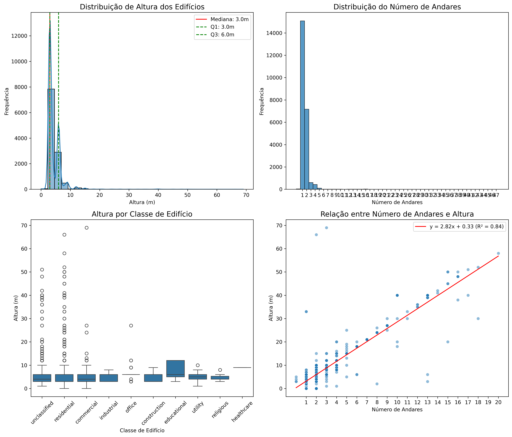
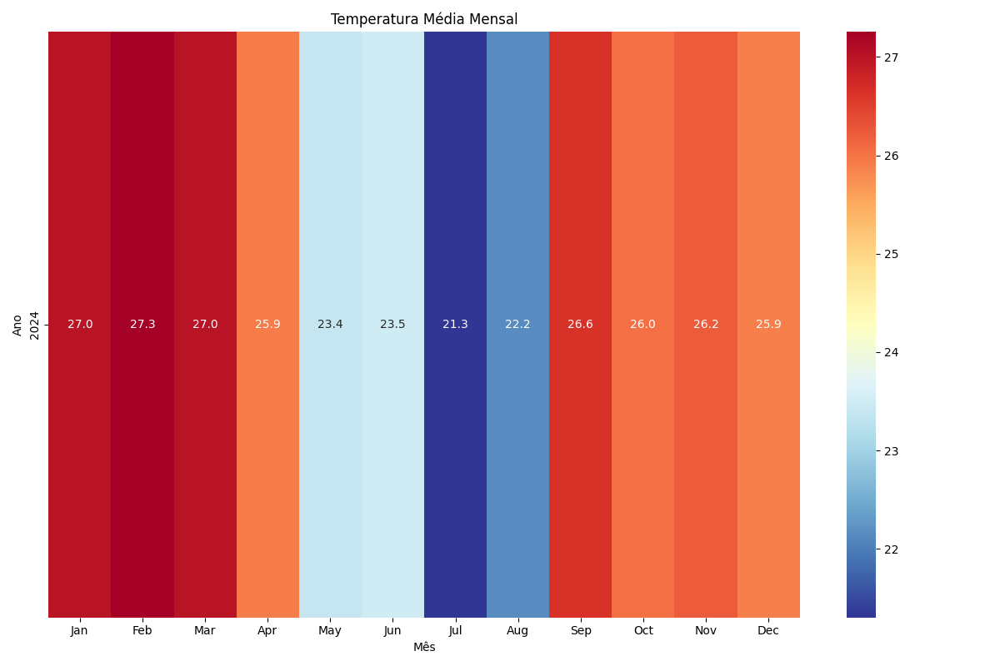

Geoprocessing with GNN
Geospatial data analysis and visualization for the city of Sorocaba
Project Overview
This project implements geospatial data analysis and visualization for the city of Sorocaba, focusing on road networks, hydrography, land use, buildings, and natural areas. The project utilizes advanced geoprocessing techniques and network analysis to extract meaningful insights from the data.
Hydrography
Analysis of hydrographic networks, drainage basins, and sinuosity of watercourses
Road Networks
Study of urban road networks and their topological characteristics
Buildings
Morphological and height analysis of urban buildings
Land Use
Mapping and analysis of land use and land cover patterns
Data Sources
Geospatial Data
- Road networks (OpenStreetMap)
- Hydrography (ANA)
- Buildings (OpenStreetMap)
- Land use (MapBiomas)
- Protected natural areas
Meteorological Data
- INMET stations
- Temperature
- Precipitation
- Humidity
- Wind direction and speed
Other Data
- Digital Elevation Model (DEM)
- Licensing data
- Radio base stations (RBS)
Visualizations
The project generates various visualizations for geospatial data analysis:
Hydrography
Sinuosity Analysis
Study of the sinuosity of watercourses
Strahler Classification

Hierarchization of watercourses using the Strahler method
Buildings

Height Analysis
Distribution of building heights
Building Classes

Distribution of building classes
Land Use

Heat Map

Spatial density of land use classes
Area Distribution

Statistical analysis of areas by land use class
Meteorological Data

Monthly Temperature
Heatmap of monthly temperatures
Precipitation by Station

Precipitation analysis by meteorological station
Road Networks

RBS Stations
Interactive Visualizations
One of the main differentiators of this project is its interactive visualizations that allow detailed analysis of geospatial data:
Interactive Map - Hydrography
This visualization shows the complete hydrographic network of the Sorocaba region, allowing analysis of connectivity, Strahler orders, and other important hydrological attributes.
Interactive Map - Buildings
Visualization of urban buildings with classification by type and height, allowing analysis of spatial distribution and urban morphology.
Interactive Map - Land Use
Detailed map of land use and land cover, allowing analysis of spatial patterns and fragmentation of land use classes.
Interactive Map - Road Network
Interactive visualization of the urban road network, with classification by road type and connectivity analysis of the urban grid.
Interactive Map - RBS Stations
Visualization of the spatial distribution of radio base stations (RBS), allowing analysis of coverage and station density.
Interactive Wind Rose
Interactive visualization of wind direction and intensity, based on meteorological data from INMET stations.
Interactive Features
- Zoom and Pan: Magnify and navigate through maps interactively
- Layer Selection: Enable/disable different information layers
- Information Popups: Click on elements to see details
- Filters: In some maps, filter by specific attributes
- Full Screen: Expand for full screen viewing
All these visualizations were created using Python libraries such as Folium and Plotly, which convert geospatial data into interactive web maps.
Project Structure
geoprocessing_gnn/ ├── data/ │ ├── interim/ # Intermediate data │ ├── processed/ # Processed data │ └── raw/ # Raw data ├── src/ │ ├── preprocessing/ # Preprocessing scripts │ │ ├── buildings.py │ │ ├── hidrografia.py │ │ ├── inmet.py │ │ ├── land_use.py │ │ ├── nature.py │ │ └── roads.py │ ├── visualization/ # Visualization scripts │ ├── analysis/ # Analysis scripts │ ├── graph/ # GNN implementations │ └── enriched_data/ # Data enrichment ├── outputs/ │ ├── figures/ # Figures and charts │ ├── models/ # Trained models │ ├── reports/ # Generated reports │ └── visualizations/ # Visualizations by category │ ├── buildings/ │ ├── hidrografia/ │ ├── inmet/ │ ├── landuse/ │ ├── natural_areas/ │ ├── rbs/ │ └── roads/ └── analysis_reports/ # Quality analysis reports
Workflow

The workflow implemented in the project follows these steps:
- Data Acquisition: Collection of data from various geospatial sources
- Preprocessing: Cleaning, validation, and standardization
- Exploratory Analysis: Basic statistics and visualizations
- Spatial Analysis: Advanced geospatial operations
- Network Modeling: Construction and analysis of spatial graphs
- Visualization: Interactive and static maps
- Report Generation: Documentation of results
Methodologies and Techniques
Data Quality Analysis
Robust techniques for verifying the integrity, completeness, and accuracy of geospatial data:
- Topological validation of geometries
- Detection of missing values and outliers
- Attribute consistency verification
- Automated quality reports
Network Analysis
Modeling and analysis of complex networks using graphs:
- Graph construction from linear data
- Calculation of topological metrics (centrality, betweenness)
- Community detection
- Connectivity analysis
Geospatial Machine Learning
Application of machine learning techniques to geospatial data:
- Graph Neural Networks (GNN)
- Spatial clustering
- Pattern detection
- Prediction of spatial attributes
Advanced Visualization
Modern geospatial visualization techniques:
- Interactive maps with Folium
- Heat and density maps
- 3D visualizations
- Interactive statistical graphs
Technologies Used
Python
Main project language
GeoPandas
Geospatial data manipulation
NetworkX
Network and graph analysis
Folium
Interactive visualization
Matplotlib
Statistical visualization
Seaborn
Advanced statistical visualization
Rasterio
Raster data processing
Shapely
Geometry manipulation
Requirements
geopandas>=0.13.2 pandas>=2.0.3 numpy>=1.24.3 matplotlib>=3.7.1 seaborn>=0.12.2 folium>=0.14.0 networkx>=3.1 shapely>=2.0.1 rasterio>=1.3.8 fiona>=1.9.4 pyproj>=3.6.0 contextily>=1.3.0 scikit-learn>=1.3.0 tqdm>=4.65.0 jupyter>=1.0.0 notebook>=7.0.3
Project Usage
Environment Setup
# Clone the repository: git clone https://github.com/D0mP3dr0/geoprocessing_gnn.git cd geoprocessing_gnn # Create a virtual environment: python -m venv venv source venv/bin/activate # Linux/Mac venv\Scripts\activate # Windows # Install dependencies: pip install -r requirements.txt
Module Execution
# Run the complete workflow: python run_workflow.py # Run data analysis: python data_analysis.py # Specific data visualization examples: python src/visualization/visualize_roads.py python src/visualization/visualize_hidrografia.py python src/visualization/visualize_buildings.py python src/visualization/visualize_land_use.py python src/visualization/visualize_inmet.py python src/visualization/visualize_nature.py # Data processing examples: python src/preprocessing/roads.py python src/preprocessing/hidrografia.py python src/preprocessing/buildings.py python src/preprocessing/inmet.py python src/preprocessing/land_use.py python src/preprocessing/nature.py